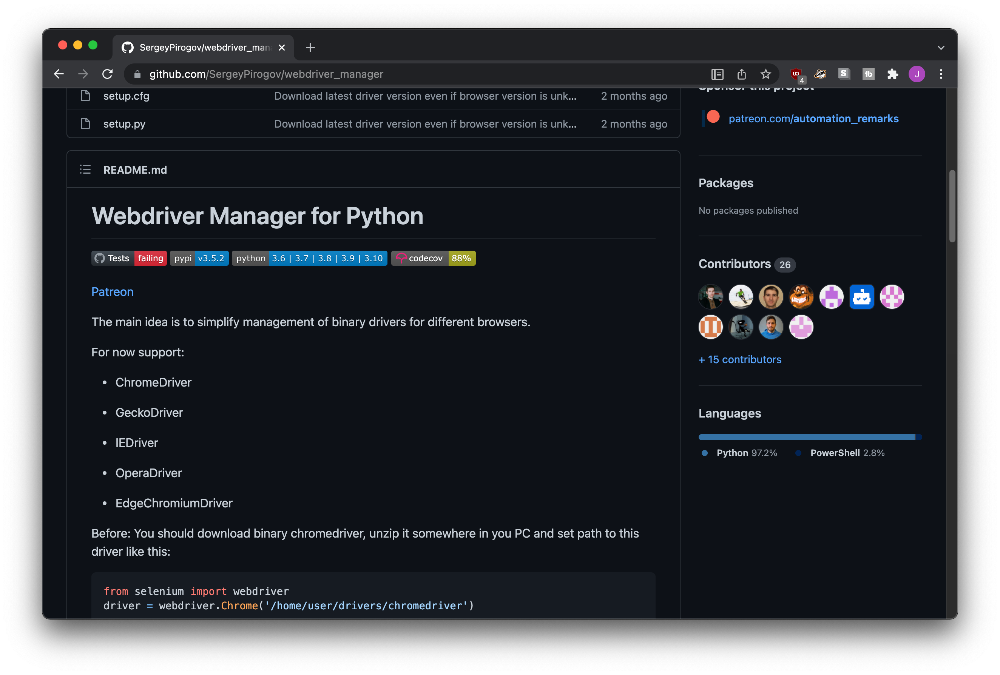
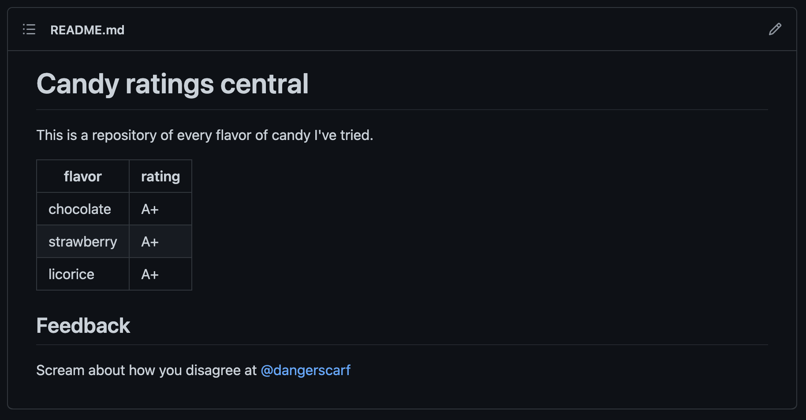
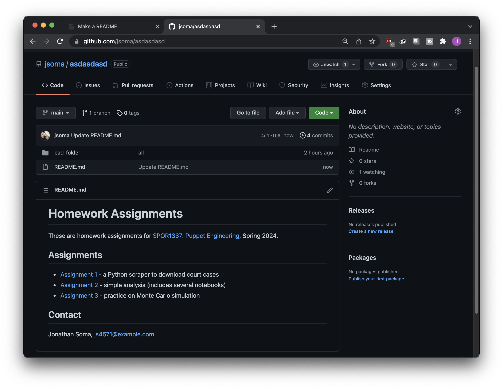

README, your repo’s front page
What is a README?
When you visit a repository, the very first thing you see is a list of files. If there aren’t many files or if you scroll down, though, you quickly see a nice little homepage:

This is the README, which you’ll find in all sorts of repositories. README will often cover why a repo was created, what it contains, and how to use the content inside.
Since no one wants to read your code, they want to read about your code, and keeping that in mind a solid README if the ticket to success.
Creating a README
To create a README, you’ll want to create a file called README.md in your repository. Not inside any folders - up at the top!
README files are generally written in a language called Markdown, which is why it has an .md extension. Unlike something like Word or Google Docs, Markdown can use plain text to express links, bold, etc.
For example, let’s say I created a new README.md file with the following content:
# Candy ratings central
This is a repository of every flavor of candy I've tried.
|flavor|rating|
|---|---|
|chocolate|A+|
|strawberry|A+|
|licorice|A+|
## Feedback
Scream about how you disagree at [@dangerscarf](http://twitter.com/dangerscarf)
When a visitor comes to my repository, they’ll see it rendered all nicely:

Beautiful, right?
README contents
It depends on the kind of project you’re posting about, but in general a README might contain:
The title of the project
A short description of what the repository contains
Links to useful information
How someone might use the repository
Installation instructions or prerequisites (e.g. run
pip install beautifulsoup4 pandas)Usage instructions (e.g. run
python scrape.py)
The license your code is granted under (oh boy this needs another section. By default it’s copyrighted to you, though, so don’t worry yet.)
For example, if you had a single repository that contained several homework assignments, you might ignore most of the above and do something like this:
# Homework Assignments
These are homework assignments for [SPQR1337: Puppet Engineering](https://www.youtube.com/channel/UCg3t2I9DIsU1HxNOHoPcLlw), Spring 2024.
## Assignments
* [Assignment 1](homework-01/scraper.py) - a Python scraper to download court cases
* [Assignment 2](homework-02/) - simple analysis (includes several notebooks)
* [Assignment 3](homework-03/horses.ipynb) - practice on Monte Carlo simulation
## Contact
Jonathan Soma, [js4571@example.com](mailto:js4571@example.com)
Which would display like the image below, linking to either individual files in the repo (Assignments 1 and 3) or directory listings (Assignment 2).

While it isn’t the most detailed listing, it give a visitor enough information to understand what the class was about, what my homework assignments were, and gives them the option to click through to the areas they’re interested in without
Writing Markdown
To write a solid README, you’ll want to write it in Markdown. You can step through a whole lesson here or just stick with a nice quick reference instead.